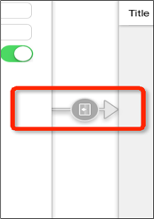
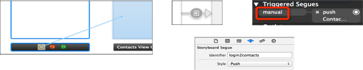

@property(nonatomic,copy) NSArray *viewControllers;
@property(nonatomic,readonly) NSArray *childViewControllers;
//使用push方法能将某个控制器压入栈
- (void)pushViewController:(UIViewController *)viewController animated:(BOOL)animated;
//使用pop方法可以移除控制器
//将栈顶的控制器移除
- (UIViewController *)popViewControllerAnimated:(BOOL)animated;
//回到指定的子控制器
- (NSArray *)popToViewController:(UIViewController *)viewController animated:(BOOL)animated;
//回到根控制器（栈底控制器）
- (NSArray *)popToRootViewControllerAnimated:(BOOL)animated;
- (void)prepareForSegue:(UIStoryboardSegue *)segue sender:(id)sender
{
UIViewController *c = segue.destinationViewController;
//拿到目标控制器，然后给目标的控制器传递数据
c.navigationItem.title = [NSString stringWithFormat:@"%@通讯录",self.account.text];
}
// 跳转之前的时候调用
@protocol XMGAddViewControllerDelegate <NSObject>
@optional
- (void)addViewController:(XMGAddViewController *)addVc didClickAddBtnWithContact:(XMGContact *)contact;
@end
// _delegate = _contactVc
if ([_delegate respondsToSelector:@selector(addViewController:didClickAddBtnWithContact:)]) {
[_delegate addViewController:self didClickAddBtnWithContact:c];
}
- (void)prepareForSegue:(UIStoryboardSegue *)segue sender:(id)sender
{
// 给添加控制器传递联系人控制器属性
XMGAddViewController *addVc = segue.destinationViewController;
addVc.delegate = self;
}
- (void)addViewController:(XMGAddViewController *)addVc didClickAddBtnWithContact:(XMGContact *)contact
{
// 把添加界面的联系人模型传递到联系人界面
// 把联系人模型保存到数组
[self.contacts addObject:contact];
// 刷新表格
[self.tableView reloadData];
{
ZJCAddVeiw *c = segue.destinationViewController;
c.block = ^(ZJCChatData * data)
{
[self.array addObject:data];
[self.tableView reloadData];
};
}
//定义block
typedef void(^ZJCAddVeiwBlock)(ZJCChatData * data);
@property (nonatomic,copy) ZJCAddVeiwBlock block;
- (IBAction)recond:(id)sender {
ZJCChatData *data = [[ZJCChatData alloc] init];
data.name = self.name.text;
data.tel = self.tel.text;
if (self.block) {
self.block(data);
}
[self.navigationController popViewControllerAnimated:YES];
}
//UINavigationItem有以下属性影响着导航栏的内容
//左上角的返回按钮
@property(nonatomic,retain) UIBarButtonItem *backBarButtonItem;
//中间的标题视图
@property(nonatomic,retain) UIView *titleView;
//中间的标题文字
@property(nonatomic,copy) NSString *title;
//左上角的视图
@property(nonatomic,retain) UIBarButtonItem *leftBarButtonItem;
//UIBarButtonItem *rightBarButtonItem 右上角的视图
@property(nonatomic,retain) UIBarButtonItem *rightBarButtonItem;
Storyboard上每一根用来界面跳转的线，都是一个UIStoryboardSegue对象（简称Segue）

//唯一标识
@property (nonatomic, readonly) NSString *identifier;
//来源控制器
@property (nonatomic, readonly) id sourceViewController;
//目标控制器
@property (nonatomic, readonly) id destinationViewController;
如果点击某个控件后，不需要做任何判断，一定要跳转到下一个界面，建议使用“自动型Segue”
手动型Segue
// Segue必须由来源控制器来执行，也就是说，这个perform方法必须由来源控制器来调用
[self performSegueWithIdentifier:@"login2contacts" sender:nil];
如果点击某个控件后，需要做一些判断，也就是说：满足一定条件后才跳转到下一个界面，建议使用“手动型Segue”

任何控制器都能通过Modal的形式展示出来
Modal的默认效果：新控制器从屏幕的最底部往上钻，直到盖住之前的控制器为止
//以Modal的形式展示控制器
- (void)presentViewController:(UIViewController *)viewControllerToPresent animated: (BOOL)flag completion:(void (^)(void))completion
//关闭当初Modal出来的控制器
- (void)dismissViewControllerAnimated: (BOOL)flag completion: (void (^)(void))completion;
(void)prepareForSegue:(UIStoryboardSegue *)segue sender:(id)sender;
// 这个sender是当初performSegueWithIdentifier:sender:中传入的sender
3、调用Segue对象的-(void)perform;方法开始执行界面跳转操作
自定义navigation的图标
//自定义一个button
UIButton *btn = [UIButton buttonWithType:UIButtonTypeCustom];
[btn setImage:[UIImage imageNamed:@"navigationbar_friendsearch"] forState:UIControlStateNormal];
[btn setImage:[UIImage imageNamed:@"navigationbar_friendsearch_highlighted"] forState:UIControlStateHighlighted];
//设置button的大小为图片大小
[btn sizeToFit];
//left 为 left UIBarButtonItem
self.left.customView = btn;
self.navigationController.navigationBar.barTintColor = [UIColor colorWithRed:0.809 green:0.491 blue:1.000 alpha:1.000];